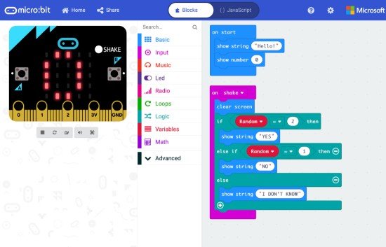

Micro:bits are commonly coded in javascript blocks, javascript (JS) or python. You can download these scripts in a .hex file to upload onto a Micro:bit. You will most likely be using JS blocks for your coding. Type in Micro:bit to Google and the first result will bring you to the Micro:bit page. Go to 'Let's code' and then the first 'Let's code' on the page it brings you to. This is the Micro:bit editor. You select classes of blocks and then drag and drop blocks to code with them. You can also see a digital Micro:bit to test your code before you download it.
